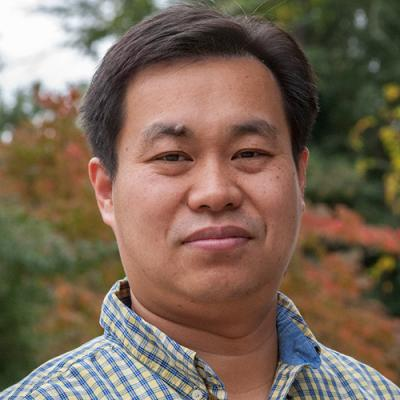

Tianming Liu
Distinguished Research Professor & UGA Athletic Association Professor
School of Computing · Department of Linguistics · University of Georgia
Biography
Tianming Liu is a Distinguished Research Professor in the University of Georgia School of Computing. He received his Ph.D. from Shanghai Jiao Tong University in 2002 and completed postdoctoral training at the University of Pennsylvania and Harvard Medical School before joining UGA.
His research connects computational neuroscience, biomedical image analysis, and biomedical informatics with brain-inspired artificial intelligence, large language models, artificial general intelligence, and quantum AI.
Research interests
Large language models and agent systems; brain-inspired learning; functional and structural neuroimaging; multimodal biomedical AI; artificial general intelligence; and quantum and hybrid quantum-classical machine learning.